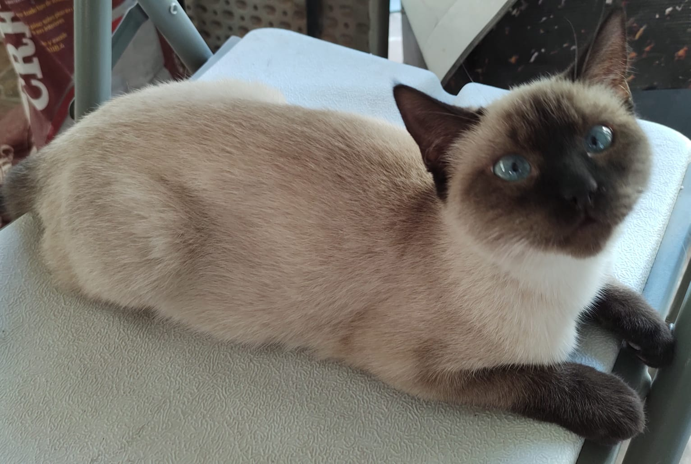

Persa

Siameses

Se trata de un mamífero de contextura pequeña, carnívoro y cuyos rasgos salientes son: cabeza redonda, lengua áspera, patas cortas, uñas importantes, filosas y retráctiles, abundante pelaje y más bien suave, y las pupilas se le dilatan para poder ver mejor a instancias de la oscuridad. Los gatos nacen luego de cumplidas las nueve semanas de gestación; en tanto, las crías nacen con los ojos y los oídos tapados aunque pueden oler y sentir sin problemas y tienen cerca a su madre que los cuida. Pasará unas nueve semanas amamantándose con su mamá y debemos decir que los gatos pequeños son muy juguetones y divertidos, y por caso, es que suelen ser una excelente compañía y primera mascota para los niños.